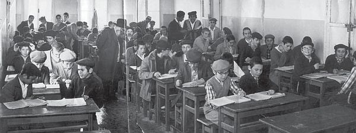

“בית משיח” חושף לראשונה את פרטי ההסכם ההיסטורי בין אגודת חסידי חב”ד וממשלת ישראל
“בית משיח” חושף לראשונה את פרטי ההסכם ההיסטורי בין אגודת חסידי חב”ד וממשלת ישראל, לפיו בישיבת חב”ד בלוד ילמדו בעברית וכן מעט לימודי חול בתמורה לקבלת תקציב מלא ומסודר * לאחר שעסקני חב”ד בארץ כתבו לרבי הריי”צ שללא התקציב הממשלתי יהיו מוכרחים לסגור את הישיבה, העניק הרבי את הסכמתו למהלך * בשולי החשיפה ע
“בית משיח” חושף לראשונה את פרטי ההסכם ההיסטורי בין אגודת חסידי חב”ד וממשלת ישראל, לפיו בישיבת חב”ד בלוד ילמדו בעברית וכן מעט לימודי חול בתמורה לקבלת תקציב מלא ומסודר * לאחר שעסקני חב”ד בארץ כתבו לרבי הריי”צ שללא התקציב הממשלתי יהיו מוכרחים לסגור את הישיבה, העניק הרבי את הסכמתו למהלך * בשולי החשיפה עולה עוד, כי אחת הדמויות הפעלתניות שפעלה למען הקמתם וביסוסם של מוסדות חב”ד בארה״ק, הייתה הגב’ חיה דבורה גולדשמיד, אשת חינוך מתל אביב ובת למשפחה חסידית, שפעלה באינטנסיביות מול משרדי הממשלה והסוכנות * גילוי

“תעלומה רבתי״, במילים אלו נפתחה סקירה היסטורית שפורסמה כאן לפני למעלה משנתיים (בגיליון 862), בה פורסם על הסכם היסטורי בין אגודת חסידי חב״ד לממשלת ישראל, בהסכמת אדמו״ר הריי״צ. בהסכם נכתב, כי הלימודים במוסדות חב״ד יתקיימו בעברית, ובתמורה יתקבל תקציב למוסדות החינוך החב״דיים. עם זאת, פרטי ההסכם גופא כמו גם דעתו המדויקת של אדמו״ר הריי״צ, נותרו בגדר תעלומה.
והנה, בחסדי ה’, יגעתי ומצאתי פרטים נוספים הקשורים להסכם זה, והריהם מוגשים לפניכם בשורות הבאות.
אשת חיל העומדת בחזית מערכת השתדלנות
קיץ תש״ט. ישיבת חב״ד בתל אביב קלטה באותם חודשים מספר גבוה של תמימים יוצאי רוסיה. במקביל, ר’ זושא וילימובסקי (הפרטיזן) הקים את ישיבת ‘תומכי תמימים’ בלוד, ולצדם הוקמו מוסדות חינוך בכפר חב״ד. את שלל המוסדות ניהלו ראשי אגודת חסידי חב״ד - הרב אליעזר קרסיק (יו״ר בפועל), הרה״ח ר’ משה גורארי’, והרה״ח ר’ פינייע אלטהויז. הללו פעלו בהכוונת אדמו״ר הריי״צ ובעידודו.
המצב הכלכלי של המוסדות באותן שנים, היה בכי רע. התרומות שקובצו לצד הסיוע שהתקבל מארגונים שונים, לא הספיק.
באותה תקופה - ממשלת ישראל והסוכנות היהודית, ביקשו לסייע לישובים ולמוסדות חדשים, במיוחד כאשר היה מדובר בעולים חדשים. אולם לגופים הרשמיים היו תנאים לקבלת תקציב, בהם גם תנאים הקשורים לתכני הלימודים. ראשי אגודת חסידי חב״ד פעלו בדרגים הגבוהים כדי לקבל תקציב מהגופים הרשמיים. מי שסייע באותם ימים, היה מר זלמן שזר, שכיהן כשר החינוך וכחבר הנהלת הסוכנות היהודית.
אחת הדמויות המרתקות הקשורות למסע השתדלנות שהתנהל באותם ימים, הייתה אשת החיל הגב’ חיה-דבורה גולדשמיד. באותן שנים היא ניהלה את מוסדות ״בית יעקב החדש״ בתל אביב, וצברה וותק וידע רב בניהול מוסד רשמי כמו גם הפעלת קשרים עבורו בחלונות המתאימים. הגב’ גולדשמיד הייתה בתו של הרב צבי הירש גורארי’ הי״ד
אגו״ח וגב׳ גולדשמיד, מבקשים ממנכ״ל משרד החינוך, את התקציב שהובטח לגן הילדים בכפר חב״ד
מורשה, מהחסידים המקורבים ביותר לאדמו״ר הריי״צ ברוסטוב ובורשה. היא הייתה רעיית המשפיע הנודע הרב נחום גולדשמיד, ואחיינית של שניים מראשי אגו״ח: הרב קרסיק והרב משה גורארי’.
כאשר הוקם כפר חב״ד וכן ישיבת ‘תומכי תמימים’ בלוד, התגייסה הגב’ גולדשמיד לסייע בדרכים מגוונות לחסידים העולים. היא הקימה בכפר חב״ד מוסדות לבנות, בית ספר יסודי ״בית רבקה״ וכן גן ילדים. לשם הקמת מוסדות אלו הפעילה קשרים במשרד הסעד בראשו עמד שר הסעד הרב יצחק מאיר לוין. מתוקף תפקידה כמנהלת ‘בית יעקב’ בתל אביב, היו לה קשרים מקצועיים עם השר ופקידיו הבכירים, ובהם מפקחת בכירה במשרד הסעד בשם ד״ר מרים הופרט.
הנה מכתב שממנו ניתן ללמוד במקצת על טיב הקשרים של הגב’ גולדשמיד. המכתב הוא מד״ר הופרט ממשרד הסעד, והיא מבקשת מגב’ גולדשמיד להקים גן ילדים ב״ספריה״:
״בזה הננו להסב את תשומת לבכם לצורך הדחוף בפתיחת גן ילדים במקום, היות ומספר הילדים הדחוף בפתיחת גן ילדים במקום, היות ומספר הילדים הנו גדול והם נמצאים במקום זה כשלושה שבועות ללא כל טיפול. נא לבקר במקום, בבית המיועד למטרה הנ״ל ולהודיענו בכתב על התיקונים הדרושים בו בכדי שנוכל לבצע את התקנת הבית בהקדם״.
מספר חודשים חלפו וגב’ גולדשמיד יכלה לברך על המוגמר, היא הקימה בית ספר יסודי וגן ילדים בכפר חב״ד. על ייסוד המוסדות כתבה לרבי מה״מ, וקיבלה תשובה על החשיבות לפעול דווקא ב״כרמי שלי״ של חב״ד, ובמיוחד אלו שעוסקים ב״כרמים״ [כשהכוונה היא על מוסדות חינוך]:
״נהניתי גם כן, מה שסוף סוף שמה לבה להתחיל בנטירת כרם בית אבי ואם בזמן שבית המקדש ראשון קיים ובני ישראל איש תחת גפנו ואיש תחת תאנתו כבר דאגו על זה ששמוני נוטרה את הכרמים [שהפקידו אותי לשמור על כרמים זרים] ובמילא כרמי שלי לא נטרתי, על אחת כמה וכמה בזמננו עתה שמבלבלים המוחות באופן היותר מבהיל ושמים חושך לאור וכו’ שהטענה והדאגה כרמי שלי לא נטרתי גדלה ביותר ובפרט לאלו המסוגלים וגם עוסקים בנטירת כרמים״.
לאחר שהקימה את המוסדות ומסרה את ניהולם לידי תושבי הכפר, המשיכה לפקוד תדיר את המוסדות כדי לסייע בתחומים שונים. היא הייתה נוהגת להגיע בימי שישי לכפר חב״ד, כדי ללמד את הבנות, להדריך את המורות, ולסייע בכל הנדרש. לעיתים היה מצטרף אליה בנה - הרב מרדכי גולדשמיד, אז ילד צעיר וכיום מגיד שיעור בישיבת חב״ד בבני ברק: ״אני זוכר כמו היום, שאמא היתה נוסעת במונית לכפר חב״ד, ושם מוסרת שיעורים לבנות בבית ספר החדש, וכן משוחחת עם המורות ועם התלמידות, בנושאי לימוד, צניעות, ועוד״.
במקביל התמסרה לסיוע לישיבות החב״דיות, באמצעות סיוע להשגת תקציבים מעליית הנוער ומשרדי הממשלה. היא היתה שותפה פעילה באספות ההיסטוריות של אגודת חסידי חב״ד שהתקיימו בדרך כלל בבית היושב ראש, הרב אליעזר קרסיק, בשדרות רוטשילד 82 במרכז תל אביב. באסיפות המצומצמות שהיו נמשכות שעות ארוכות, השתתפו ראשי אגודת חסידי חב״ד ולעיתים אישים חב״דיים נוספים ועמם גב’ גולדשמיד. זו הייתה מדווחת על פעולותיה בחלונות הגבוהים, ונידבה עצות חכמות מניסיונה העשיר ב״בית יעקב״. היא לא נחה ולא שקטה, וכל זמן פנוי ניצלה לפגישות, לטלפונים ולכתיבת מכתבים עם פקידים בכירים במשרדי הממשלה ובסוכנות במטרה לסייע למוסדות חב״ד.
על פעולותיה להקמת מוסדות חב״ד בשנים תש״ט-תש״י, מיאנה לשוחח, שכן ניהלה באותם ימים את מוסדות ״בית יעקב״ השייכים ל״אגודת ישראל״, ונראה שחששה מניגוד אינטרסים.
עברית ולימודי חול?
כדי לקבל תקציב מ’עליית הנוער’ (מחלקה בסוכנות היהודית), פעלו מנהלי אגודת חסידי חב״ד עם הגב’ גולדשמיד במרץ רב. עליית הנוער שמה לה למטרה לתקצב נערים נזקקים, ובהם עולים חדשים. לאחר משא ומתן ארוך, הבטיחו אנשי חב״ד כי הלימודים בישיבה בלוד יעברו בהדרגה להתנהל בעברית, והתלמידים אף ילמדו מעט לימודי חול. הכל כמובן נעשה בלית ברירה וגם אנשי עליית הנוער חששו כי החסידים לא יעמדו בהבטחתם ללמוד בעברית, ואף ציינו זאת בתכתובת פנימית. אף על פי כן, אישרו את התקציב.
תקציב זה של עליית הנוער, היה הסעיף המרכזי בהכנסות הישיבה בלוד. מאז אושר התקציב בשלהי תש״ט, הוא המשיך קרוב לארבעים שנה, עד אשר הסוכנות הפסיקה את התקציב בתגובה להחלטת חב״ד שלא להכניס עולי אתיופיה למוסדות.
מלבד תקציב זה שכיסה בעיקר את הוצאות הפנימיה והמבנים לישיבה, היה צורך להשיג מקור תקציבי למשכורות ולהוצאות אחרות של הישיבה בלוד, בתל אביב וכן לתלמוד תורה שהוקם בכפר חב״ד. במקביל לצורך הדחוף בתקציב, באותם ימים הוביל שר החינוך זלמן שזר מהלך של חוק חינוך חובה, שחייב תלמידים עד גיל 14 ללמוד לפי תכנית לימודים מסוימת, כאשר רק המוסדות לתלמידים בגילאים אלו קיבלו תקציבים מתאימים.
שוב עלתה השאלה כיצד לנהוג. הרשויות הממשלתיות ביקשו הבטחה ללמוד בשפה העברית וכן לימודי חול. הבעיה נפרשה באגרת מיוחדת שכתבו ראשי אגודת חסידי חב״ד לאדמו״ר הריי״צ. לאחר שפירטו על התפתחות כפר חב״ד, עברו לדווח על מצב הישיבה בלוד, ועל אישור תקציב עליית הנוער:
“הישיבה בלוד מסתדרת באופן שלא פיללנו מראש ורואים בחוש ההשגחה העליונה בזה, הישיבה נתייסדה במסירות נפש, ובראש ובראשונה עומדים בזה התמים ר’ אלימלך קפלן והתמים הבחור זושא וילימובסקי, הראשון שהתמסר ללמוד ולהשגיח על התלמידים אף שלא היו אצלו אמצעים להתקיים, והשני בזה שהתמסר להשגת כספים, הוא מתעסק בזה יומם ולילה בעיירות ובכפרים, בבתי כנסיות ובתי מדרשות, ובנאומיו הפשוטים בתמימות, הוא מוצא אוזן קשבת ובאים לעזרתו, ואף שהדוחק שמה היה גדול עד למאוד, אבל גם לחיי דוחק היו צריכים לאמצעים כספיים, אף מובן שלא לאורך ימים יכולים להתקיים במצב כזה. עד שביני וביני נתסדר הדבר על ידי עליית הנוער, מטעם הסוכנות, שאישרו לסוג
מכתב חברי אגו״ח: היינו מוכרחים להבטיח עברית ולימודי חול, שהישיבה לא תיסגר
עליית הנוער שיכסה את רוב התקציב, הגיע הזמן לתת קרדיט, למי שעבדה ופעלה רבות מאחורי הקלעים:
“הגברת חיה דבורה גולדשמיד תחי’ השקיעה בזה הרבה מרץ בהשגת ענין עליית הנוער ועזרה בהוצאת הדבר לפועל, ולדעתנו היא ראויה לברכת כ”ק שליט”א בעד עבודתה”.
במכתב מובהר כי העזרה הניתנת מעליית הנוער, היא דבר יוצא מהכלל, שכן עד כה נתנו זאת רק לזרמים קיימים
של השמאל והימין, ולא למוסדות פרטיים. אך בעליית הנוער החליטו כי הם סומכים על אגודת חסידי חב״ד שניתן לתקצב את המוסדות שלהם. זאת ועוד, הם הבטיחו אף שלא להתערב בתכנים, מלבד שני תנאים חשובים: ״[…] ללמוד כעשר שעות בשבוע לימודי חול ולסדר שבמשך הזמן יהיה לימוד בעברית - ועל זה היינו מוכרחים להבטיח להם כי בלי עזרתם היינו מוכרחים לסגור את הישיבה״.
כאמור, עליית הנוער תקצבה באופן רשמי רק תלמידים ממשפחות נצרכות או מרובות ילדים בגילאים מסוימים. לשם כך היה צריך להקים מוסד מיוחד לילדים אלו. גם מנהל חדש מונה - הלא הוא הת’ אפרים וולף (בפועל ניהל הרב וולף את הישיבה בלוד מאז ובמשך עשרות שנים, וראה הצלחה גדולה, כידוע).
גם בישיבה בתל אביב שררה מצוקה גדולה. המשכורות לא שולמו ותנאי המחיה היו קשים. לאחר פירוט הצעות ייעול שונות, עוברים כותבי המכתב לשאלה הבוערת של חינוך חובה: ״כעת יש לנו שאלה בוערת, הממשלה החליטה על חובת החינוך עד גיל 14, כפי שהגדיר מר זלמן רובשוב [שזר] גם בהיות הרש״ג שיחי’ פה [בחודשי קיץ תש״ט] לא יתערבו בעניני החינוך, ורק יתבעו שיהיו לימודי חול כשעתיים ביום, והלימוד יהיה בעברית, ושיהיה סדר מסודר בניקיון והדומה. מצידם ישלמו להמורים המשכורת וגם יעזרו באש״ל וכדומה״.
והנה היתרונות בכניסה להסדר של חוק חינוך חובה תמורת תקציב מהמדינה:
״מובן שאם נביט על צד החומרי אזי יוקל בהרבה מצב הישיבה, ואפשר שיתווספו תלמידים; ראשית כי כיון שהלימוד יהיה בעברית שהרבה לא רצו לתת [את ילדיהם] לישיבתנו כיון שהלימוד באידיש, כי הילדים דפה [ילידי ארץ הקודש] לא מבינים אידיש, וצריכים ללמד אותם אידיש כשנכנסים להחדר. שנית, כי כיון שמצב הגשמי באש״ל ובניקיון יוטב זה גם כן ימשוך את התלמידים. שלישית, שלא נהיה מצומצמים כל כך בקבלת התלמידים […], מצד המקום שלא מכיל ומצד האמצעים שאין לנו״.
על כל אלו מסיימים: ״ואם כן יש מקום לשאלה, ואנחנו מבקשים מכ״ק שליט״א שישיב לנו במברק, אם אפשר, כי הזמן קצר״.
בחתימת המכתב הם שואלים עוד: האם במסגרת חוק חינוך חובה, יש להצטרף לזרם אגודת ישראל או להמשיך להיות עצמאיים.
על אגרת מפורטת זו על שאלותיה, השיב אדמו״ר הריי״צ באגרת מכ״ח אלול תש״ט, והיא מהווה יסוד חשוב לפולמוס הבלתי פוסק הניטש בחב״ד אודות לימודי חול:
״במענה על שאלתם במכתבם מי״ג אלול אודות יחס ישיבת תומכי תמימים ליובאוויטש בתל אביב, לחוק החינוך, אין עליהם להיספח לזרם אחר אלא להיות זרם בפני עצמו. ויכולים להסכים אשר במשך הזמן כשהישיבה עצמה תיווכח אשר לטובת התלמידים, לפי תנאי מצבם, יותר טוב אשר הלימודים יהיו בלשון הקודש ואשר במידה ידועה ילמדו גם לימודי חול, אזי תהיה הישיבה מוכנה להתאים עצמה בהדרגה לתנאים אלה, אבל לעת עתה נשארת ההנהגה בישיבה כמקדם ובכל זאת מקבלים את כל התמיכה הראויה להם כגון שכירות, דירה וכו’״ (אגרות קודש חי״ג אגרת ה’ג).
לימים הבהיר הרבי והדגיש (בשיחת י״ב תמוז תשי״ז) שהיו עניינים שנעשו ״מצד הכרח השעה . . כדי להציל את הניצוצות הנמצאים למטה. ואחד הענינים הוא - שבשלב מסויים, לא ניהלו מלחמה נגד הענין של לימודי חול (בגיל מסויים) במוסד שלומדים לימודי קודש, אף על פי שבעבר היה הדבר בשלילה מוחלטת . . אמנם, צריכים לזכור אשד הנהגה זו ומעין זו היא רק בדרך הוראת שעה בלבד, מפני המצב, באותו מקום ובאותו איש, אבל לא בתור סדר קבוע”. עכלה״ק.
הרבי הריי״צ מקבל עדכונים
מספר ימים לאחר מכן, הגיע החסיד ר’ פינייע אלטהויז ל-770 כדי להסתופף בצלו של הרבי בחודש החגים. ר’ פינייע היה מהעסקנים הבולטים בארץ הקודש ופעיל נמרץ למען המוסדות. בשהותו בארה״ב נכנס פעמיים ליחידות שעסקו בעניינים ציבוריים. הוא דיווח בפרוטרוט על כל הנעשה בקשר להתפתחות מוסדות חב״ד. במהלך שהותו בארה״ב אף קיבל מכתבים מידידיו הרב קרסיק והרב גורארי’ ובהם פרטים חשובים בנוגע להתפתחות המוסדות. ר’ פינייע הכניס את המכתבים הללו אל הרבי כדי שהרבי יקרא בעצמו.
בהמשך קיבל מכתב נוסף מהרב קרסיק בו הוא מספר כי העדרותו של ר’ פינייע מארה״ק מורגשת בהחלט: ״אני מוכרח למלאות מקומך בריצות להנהלת עליית הנוער, ל[זלמן] מסחרי [בכיר בסוכנות היהודית], לקריה [משרדי הממשלה בתל אביב] ועוד ועוד וכבר אני מחכה לביאתך״.
במקביל שיגר הרב קרסיק אגרת לאדמו״ר הריי״צ בה מבקש להוסיף על העדכונים של ר’ פינייע, ומספר על התפתחות כפר חב״ד ואף על ‘חדר’ שנפתח בכפר בו לומדים עשרות תלמידים ומתנהל על ידי הת’ זושא וילימובסקי [נראה שהניהול על ידו היה לזמן קצר בלבד]. הוא הוסיף כי בימים הקרובים עתיד להיפתח בית ספר ״בית רבקה״ לבנות, וכמעט נשלמו הסידורים לקבל עבורם תמיכה ממשלתית.
באותו יום נפגשו הרב קרסיק והרב גורארי’ עם ד״ר ברוך בן יהודה, מנכ״ל משרד החינוך כדי לאשר את הקמתה של ״בית רבקה״ בכפר שתקבל תקציב ממשרד החינוך. בפגישה זו לא התקבלו החלטות מעשיות.
במכתב שהפנו ראשי אגו״ח אל מר שזר, הם מבקשים: ״אנו פונים לכב’ השר על סמך הבטחתו לנו כי נוכל בכל מקום לפתוח בית ספר בלתי זרמי ברוח חב״ד [כפי הוראת אדמו״ר הריי״צ הנזכרת באגרת לעיל] לתת הוראות לד״ר בן יהודה שיאשר פתיחת בית ספר בלתי זרמי בכפר שפריר [כפר חב״ד] ובלוד״.
מכתב זה לא נשלח למשרדו של שר החינוך, אלא למרכז רפואי בו אושפז מפאת מצב בריאותו. בלית ברירה, העסקנים הנמרצים נאלצו לשגר את המכתב אליו למרות מצבו הבריאותי כדי לזרז ולהחיש את קבלת ההחלטות.
הפגישה הבאה התקיימה ביום כ״ה במר-חשון תש״י, בה נטלו חלק ראשי אגו״ח ומנכ״ל משרד החינוך ברוך בן יהודה. בפגישה סוכם על תוכנית לימודים חדשה שבה הלימודים של התלמידים הצעירים בגילאי בית ספר יסודי, יתנהלו בעברית ויכללו גם לימודי חול. בעקבות ההסכם, הפך בית הספר חב״ד בלוד, ל״מוכר״ נתמך והוא קיבל את מלוא התקציב כשם שקיבלו בתי ספר הנחשבים ל״רשמי״.
היה בתקצוב זה לפנים משורת הדין, שכן על פי הדרגה שנקבעה לבית הספר החב״די, היה עליו לקבל תקצוב נמוך יותר. הדבר עורר תמיהתם של גורמים רשמיים במשרד החינוך באותה עת, אולם מר בן ציון לוריא, מנהל המחלקה לתקן בתי הספר, הבהיר כי התקציב המלא לישיבה בלוד מגיע בגין הסכם בין אדמו״ר הריי״צ למר שזר:
״מתברר כי במשא ומתן שהיה בשעתו בין שר החינוך מר שזר לבין הרבי מליובאוויטש [הריי״צ] ע״ה, הושג הסכם שלפיו מתחילים ללמוד במוסדות